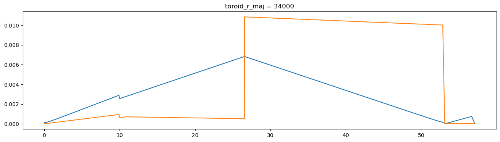

Optical Elements as Ophyd Objects¶
This section is based on the TES beamline example.
Hint: See the List of predefined simulations in Sirepo for examples of identifiers for different beamlines.
Run “Beamline” SRW simulations¶
In this example, we scan the horizontal size of the aperture and collect the resulting averaged intensities and corresponding 2D intensity distributions from the “Watchpoint” report on the “Beamline” page of Sirepo/SRW app.
Start ipython and run the following where sim_id is the UID for the simulation we are working with:
[1]:
%run -i ../../../examples/prepare_det_env.py
from sirepo_bluesky.sirepo_bluesky import SirepoBluesky
from sirepo_bluesky.sirepo_ophyd import create_classes
connection = SirepoBluesky("http://localhost:8000")
data, schema = connection.auth("srw", "00000002")
classes, objects = create_classes(connection.data,
connection=connection)
globals().update(**objects)
aperture.horizontalSize.kind = "hinted"
w9.duration.kind = "hinted"
(uid,) = RE(bp.scan([w9], aperture.horizontalSize, 0, 2, 5))
hdr = db[uid]
tbl = hdr.table(fill=True)
print(tbl)
w9_image = np.array(list(hdr.data("w9_image")))
Transient Scan ID: 1 Time: 2022-02-24 20:34:26
Persistent Unique Scan ID: 'bc606505-7a36-4088-993d-4c403b24fe1c'
New stream: 'primary'
+-----------+------------+-------------------------+-------------+------------+
| seq_num | time | aperture_horizontalSize | w9_duration | w9_mean |
+-----------+------------+-------------------------+-------------+------------+
| 1 | 20:35:01.4 | 0.000 | 34.176 | 0.000 |
| 2 | 20:35:30.1 | 0.500 | 28.523 | 2510544190625.287 |
| 3 | 20:35:58.8 | 1.000 | 28.488 | 41560782559219.422 |
| 4 | 20:36:28.5 | 1.500 | 29.552 | 136793792948293.203 |
| 5 | 20:36:57.2 | 2.000 | 28.504 | 346875726031568.125 |
+-----------+------------+-------------------------+-------------+------------+
generator scan ['bc606505'] (scan num: 1)
time aperture_horizontalSize \
seq_num
1 2022-02-24 20:35:01.405962944 0.0
2 2022-02-24 20:35:30.146366358 0.5
3 2022-02-24 20:35:58.833588123 1.0
4 2022-02-24 20:36:28.565042019 1.5
5 2022-02-24 20:36:57.278046370 2.0
w9_sirepo_data_json \
seq_num
1 {"models": {"arbitraryMagField": {"interpolati...
2 {"models": {"arbitraryMagField": {"interpolati...
3 {"models": {"arbitraryMagField": {"interpolati...
4 {"models": {"arbitraryMagField": {"interpolati...
5 {"models": {"arbitraryMagField": {"interpolati...
w9_sirepo_data_hash w9_duration \
seq_num
1 5395355ffba3d3970a59fdf191efaee639a30c510e4a47... 34.176389
2 3265acf059a96c81dcc11562935091c102c4e445168da9... 28.522810
3 e50cf3c43854c6fcb0a157321387a12292384de573ee87... 28.487741
4 90976cb352f04dd2082df263886496e0ff7aa260ffbfbc... 29.552215
5 a202c0baf03a2cc117263f06445e99b0f329e0bf195399... 28.504168
w9_image w9_shape \
seq_num
1 [[0.0, 0.0, 0.0, 0.0, 0.0, 0.0, 0.0, 0.0, 0.0,... [42, 960]
2 [[926.6341552734375, 935.7051391601562, 954.32... [42, 960]
3 [[1142696.125, 1127239.25, 1114390.125, 116813... [42, 960]
4 [[114820112.0, 116992512.0, 116708392.0, 11891... [42, 960]
5 [[980582272.0, 1007160704.0, 1032941312.0, 103... [42, 960]
w9_mean w9_photon_energy \
seq_num
1 0.000000e+00 2500.0
2 2.510544e+12 2500.0
3 4.156078e+13 2500.0
4 1.367938e+14 2500.0
5 3.468757e+14 2500.0
w9_horizontal_extent \
seq_num
1 [-2.1254114436366436e-06, -9.098470371627117e-07]
2 [-0.0002015893619838878, 0.00019947725636508496]
3 [-6.523977670846958e-05, 6.234960530300249e-05]
4 [-3.183281321719476e-05, 2.883299625123156e-05]
5 [-1.880166551489609e-05, 1.5761422719808468e-05]
w9_vertical_extent w9_id w9_title \
seq_num
1 [-6.735306985152392e-07, 6.90416995865796e-07] 15 W9
2 [-1.789280408182185e-05, 1.7455179846077244e-05] 15 W9
3 [-1.747167489540234e-05, 1.7044350685160325e-05] 15 W9
4 [-1.680649675386221e-05, 1.639544154620327e-05] 15 W9
5 [-1.556056188360331e-05, 1.5179979892601324e-05] 15 W9
w9_type w9_element_position
seq_num
1 watch 57.142
2 watch 57.142
3 watch 57.142
4 watch 57.142
5 watch 57.142

[2]:
from mpl_toolkits.axes_grid1 import ImageGrid
print(f"Data shape: {w9_image.shape}")
num_frames = w9_image.shape[0]
ncols = 2
nrows = int(np.ceil(num_frames / ncols))
fig = plt.figure()
grid = ImageGrid(fig, (1, 2, ncols, nrows),
nrows_ncols=(nrows, ncols),
axes_pad=0.5,
aspect=False)
for ax, im in zip(grid, w9_image[:, ...]):
ax.imshow(im, aspect="auto")
Data shape: (5, 42, 960)

Run “Beam Statistics” Sirepo/Shadow app simulations¶
In this example, we scan the toroidal mirror’s radius and collect the results of the “Beam Statistics” report on the “Beamline” page of Sirepo/Shadow app. At the end of the execution, we provide the timing report for these simulations.
[3]:
%run -i ../../../examples/prepare_det_env.py
from sirepo_bluesky.sirepo_bluesky import SirepoBluesky
from sirepo_bluesky.sirepo_ophyd import BeamStatisticsReport, create_classes
connection = SirepoBluesky("http://localhost:8000")
data, schema = connection.auth("shadow", "00000002")
classes, objects = create_classes(connection.data,
connection=connection)
globals().update(**objects)
bsr = BeamStatisticsReport(name="bsr", connection=connection)
toroid.r_maj.kind = "hinted"
bsr.duration.kind = "hinted"
scan_range = (10_000, 50_000, 21)
(uid,) = RE(bp.scan([bsr], toroid.r_maj, *scan_range))
hdr = db[uid]
tbl = hdr.table()
print(tbl)
Transient Scan ID: 1 Time: 2022-02-24 20:36:59
Persistent Unique Scan ID: '0395b32d-a174-4259-9e8a-85d6c34d17e4'
New stream: 'primary'
+-----------+------------+--------------+--------------+
| seq_num | time | toroid_r_maj | bsr_duration |
+-----------+------------+--------------+--------------+
| 1 | 20:37:05.9 | 10000.000 | 6.151 |
| 2 | 20:37:11.1 | 12000.000 | 5.134 |
| 3 | 20:37:16.4 | 14000.000 | 5.148 |
| 4 | 20:37:21.6 | 16000.000 | 5.186 |
| 5 | 20:37:26.9 | 18000.000 | 5.147 |
| 6 | 20:37:32.1 | 20000.000 | 5.151 |
| 7 | 20:37:37.4 | 22000.000 | 5.148 |
| 8 | 20:37:42.6 | 24000.000 | 5.140 |
| 9 | 20:37:47.8 | 26000.000 | 5.150 |
| 10 | 20:37:53.1 | 28000.000 | 5.144 |
| 11 | 20:37:58.3 | 30000.000 | 5.155 |
| 12 | 20:38:03.5 | 32000.000 | 5.142 |
| 13 | 20:38:08.7 | 34000.000 | 5.145 |
| 14 | 20:38:14.0 | 36000.000 | 5.140 |
| 15 | 20:38:19.2 | 38000.000 | 5.146 |
| 16 | 20:38:24.4 | 40000.000 | 5.123 |
| 17 | 20:38:29.6 | 42000.000 | 5.133 |
| 18 | 20:38:34.8 | 44000.000 | 5.130 |
| 19 | 20:38:40.0 | 46000.000 | 5.132 |
| 20 | 20:38:45.3 | 48000.000 | 5.150 |
| 21 | 20:38:50.4 | 50000.000 | 5.117 |
+-----------+------------+--------------+--------------+
generator scan ['0395b32d'] (scan num: 1)
time \
seq_num
1 2022-02-24 20:37:05.960705519
2 2022-02-24 20:37:11.192203283
3 2022-02-24 20:37:16.419401169
4 2022-02-24 20:37:21.695476770
5 2022-02-24 20:37:26.935284853
6 2022-02-24 20:37:32.174474716
7 2022-02-24 20:37:37.409187794
8 2022-02-24 20:37:42.631888628
9 2022-02-24 20:37:47.864703178
10 2022-02-24 20:37:53.106326580
11 2022-02-24 20:37:58.344966888
12 2022-02-24 20:38:03.564843416
13 2022-02-24 20:38:08.794731855
14 2022-02-24 20:38:14.015141010
15 2022-02-24 20:38:19.237486362
16 2022-02-24 20:38:24.445225000
17 2022-02-24 20:38:29.657321930
18 2022-02-24 20:38:34.862761259
19 2022-02-24 20:38:40.072847366
20 2022-02-24 20:38:45.303879499
21 2022-02-24 20:38:50.494606018
bsr_sirepo_data_json \
seq_num
1 {"models": {"beamStatisticsReport": {"driftDiv...
2 {"models": {"beamStatisticsReport": {"driftDiv...
3 {"models": {"beamStatisticsReport": {"driftDiv...
4 {"models": {"beamStatisticsReport": {"driftDiv...
5 {"models": {"beamStatisticsReport": {"driftDiv...
6 {"models": {"beamStatisticsReport": {"driftDiv...
7 {"models": {"beamStatisticsReport": {"driftDiv...
8 {"models": {"beamStatisticsReport": {"driftDiv...
9 {"models": {"beamStatisticsReport": {"driftDiv...
10 {"models": {"beamStatisticsReport": {"driftDiv...
11 {"models": {"beamStatisticsReport": {"driftDiv...
12 {"models": {"beamStatisticsReport": {"driftDiv...
13 {"models": {"beamStatisticsReport": {"driftDiv...
14 {"models": {"beamStatisticsReport": {"driftDiv...
15 {"models": {"beamStatisticsReport": {"driftDiv...
16 {"models": {"beamStatisticsReport": {"driftDiv...
17 {"models": {"beamStatisticsReport": {"driftDiv...
18 {"models": {"beamStatisticsReport": {"driftDiv...
19 {"models": {"beamStatisticsReport": {"driftDiv...
20 {"models": {"beamStatisticsReport": {"driftDiv...
21 {"models": {"beamStatisticsReport": {"driftDiv...
bsr_sirepo_data_hash bsr_duration \
seq_num
1 812562d20d11a7b0bed1b1c8578483bac9d85d6e89e043... 6.151363
2 9c757329a171f9cedfcf019e15f9017fc666e00d489757... 5.134350
3 0770e471124942fff48521d35039f70cc4c945947d3f54... 5.148375
4 43aafff36527f7724f85798d5ab12b6437d1827b8d738c... 5.186449
5 9d5c7c34d82922cf92a70ae5176e61be86a02b6f769040... 5.147041
6 60592e8c670fc61f76f0d7ab1e2b1cc142262bc950ccbc... 5.150883
7 664d0ee3a99cf523ce261136c5b7ac6d926d11c591a9a2... 5.147649
8 d5654c74f38d3174fefa69e040d9445e5efabee80aec1f... 5.139696
9 1e511dd7d16c38353288ab9504f04e56d2e3820a19cc42... 5.150332
10 9100646729b2f1b55f52ed50a5c19f726af08d8bc9f392... 5.143615
11 97cf9430f0e10017cc06cd6e3b6f5c894bd93f61d4240c... 5.155340
12 7d87241dab573e4c15424e71f8b4a61b44a05b1e529d47... 5.142207
13 07aa65f352e7cc534d3e064eb1d926ec1afa36dac05070... 5.145069
14 dd082853b645995a44fbd44a7e0330d52602c3b426c6d9... 5.140403
15 273608246664a7d183852ec2bf4fa9a688f6fda41bad93... 5.146037
16 32ec0b245b3f4ec01a0ef98b679b0054b76ec09d3e0fc6... 5.123253
17 c7e5bc1684e3f0e75f53bb379162f7ea3a5be4a7ab593b... 5.132711
18 4c6a094aed47735a606cdc20aa2a510b3230b49b90cda0... 5.129893
19 be2a8f482bd5e772a7ecc18b1f6c1703899a48520f82ac... 5.131767
20 f57ac73485449ac157bc3901b929b838d0f513139558a7... 5.150076
21 e4e24845cffd4e50f7b1090a3eb61e7f2ba4d2b111161f... 5.116560
bsr_report toroid_r_maj
seq_num
1 {"angxpzp": [0.0, -1.7793448589854113e-20, -3.... 10000.0
2 {"angxpzp": [0.0, -1.7793448589854113e-20, -3.... 12000.0
3 {"angxpzp": [0.0, -1.7793448589854113e-20, -3.... 14000.0
4 {"angxpzp": [0.0, -1.7793448589854113e-20, -3.... 16000.0
5 {"angxpzp": [0.0, -1.7793448589854113e-20, -3.... 18000.0
6 {"angxpzp": [0.0, -1.7793448589854113e-20, -3.... 20000.0
7 {"angxpzp": [0.0, -1.7793448589854113e-20, -3.... 22000.0
8 {"angxpzp": [0.0, -1.7793448589854113e-20, -3.... 24000.0
9 {"angxpzp": [0.0, -1.7793448589854113e-20, -3.... 26000.0
10 {"angxpzp": [0.0, -1.7793448589854113e-20, -3.... 28000.0
11 {"angxpzp": [0.0, -1.7793448589854113e-20, -3.... 30000.0
12 {"angxpzp": [0.0, -1.7793448589854113e-20, -3.... 32000.0
13 {"angxpzp": [0.0, -1.7793448589854113e-20, -3.... 34000.0
14 {"angxpzp": [0.0, -1.7793448589854113e-20, -3.... 36000.0
15 {"angxpzp": [0.0, -1.7793448589854113e-20, -3.... 38000.0
16 {"angxpzp": [0.0, -1.7793448589854113e-20, -3.... 40000.0
17 {"angxpzp": [0.0, -1.7793448589854113e-20, -3.... 42000.0
18 {"angxpzp": [0.0, -1.7793448589854113e-20, -3.... 44000.0
19 {"angxpzp": [0.0, -1.7793448589854113e-20, -3.... 46000.0
20 {"angxpzp": [0.0, -1.7793448589854113e-20, -3.... 48000.0
21 {"angxpzp": [0.0, -1.7793448589854113e-20, -3.... 50000.0

[4]:
import json
import matplotlib.pyplot as plt
for idx in range(1, tbl["toroid_r_maj"].size + 1):
d = json.loads(tbl["bsr_report"][idx])
plt.figure(figsize=(16, 4))
plt.plot(d["s"], d["sigmax"])
plt.plot(d["s"], d["sigmaz"])
plt.title(f"toroid_r_maj = {tbl['toroid_r_maj'][idx]:.0f}")
/tmp/ipykernel_7062/1375322784.py:6: RuntimeWarning: More than 20 figures have been opened. Figures created through the pyplot interface (`matplotlib.pyplot.figure`) are retained until explicitly closed and may consume too much memory. (To control this warning, see the rcParam `figure.max_open_warning`).
plt.figure(figsize=(16, 4))





[5]:
data = np.array(tbl["time"].diff(), dtype=float)[1:] / 1e9
fig = plt.figure()
ax = fig.add_subplot()
ax.plot(np.linspace(*scan_range)[1:], data, label="Duration of simulations")
ax.set_ylabel("Duration of simulations [s]")
ax.set_xlabel("Torus Major Radius [m]")
ax.axhline(data.mean(), color="k", label="Averaged duration")
ax.legend()
title = (
f"Shadow TES simulation\n"
f"RE(bp.scan([bsr], toroid.r_maj, "
f"{', '.join([str(x) for x in scan_range])}))"
)
ax.set_title(title)
plt.show()